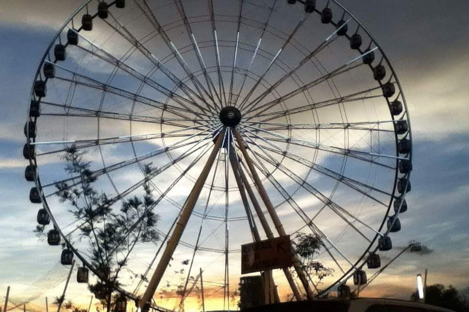
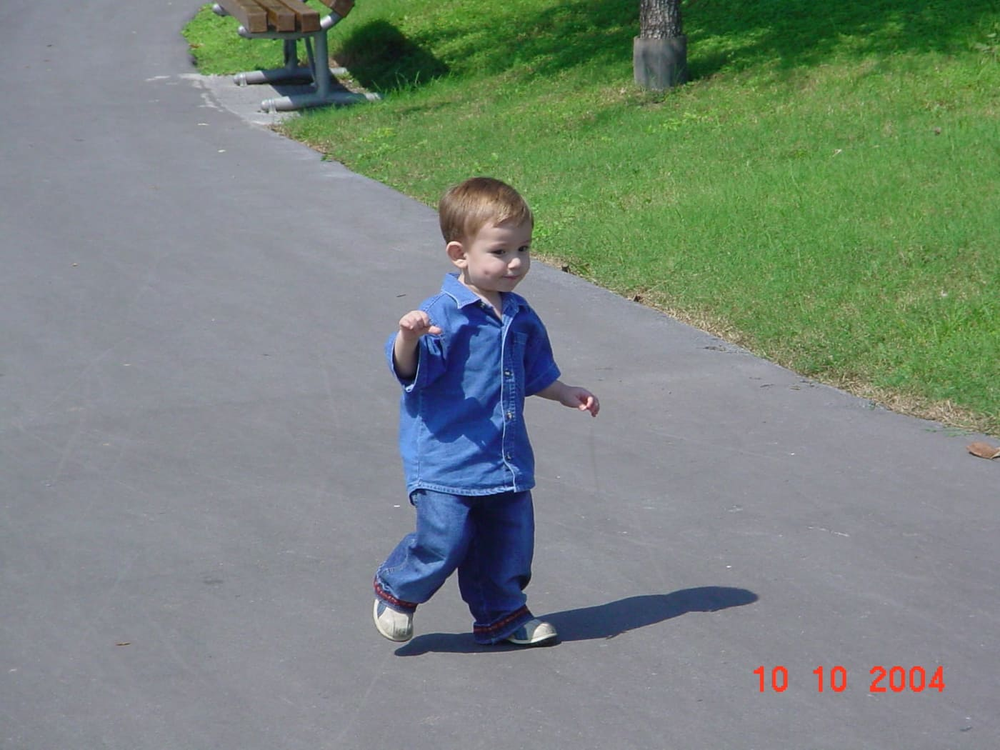
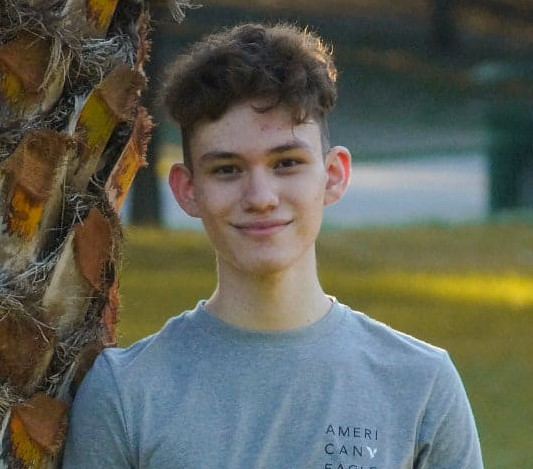
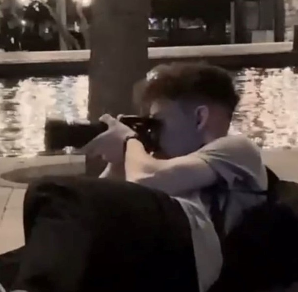
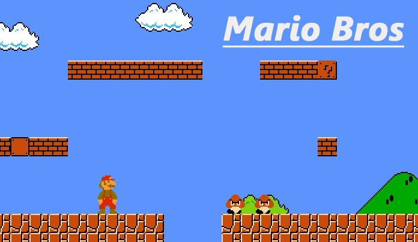
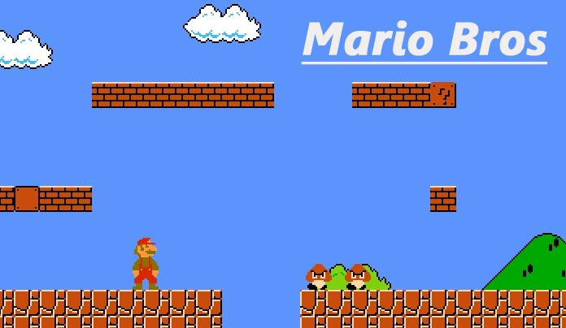

Mi nombre es Hugo Alejandro García Rodríguez, nací el 25 de marzo del 2003 a las 3:45 de la mañana en un
hospital en lo que antes se llama Distrito Federal, ubicado en Ciudad de México.
 
A mi primer año de vida me mudé a Nuevo León
donde pasé 5 años, estudié el maternal para después mudarme a Puebla
donde pasé toda mi niñez y gran parte de mi adolescencia, conocí a mis amigos de allá desde chicos y me fuí de allá 8 años
después para posteriormente regresar a Nuevo León en 2do de secundaria donde actualmente estoy viviendo.
Mis pasatiempos los fortalecí cuando inició la cuarentena, ya que como hubo más tiempo decidí invertir tiempo en ellos.
Me gusta tocar el piano, a mi parecer es un instrumento músical muy interesante y sus canciones me gusta
como se escucha, la que he tocado completa se llama claire de lune de Beethoven, otra que me gusta
se llama Arrival of the birds.

Me gusta la fotografía, tanto tomar fotos y saber qué ángulos son
los que se pueden ver mejor, su brillo, iso, ruido, etc, así como posar para que me tomen fotos, una de mis actividades
favoritas, a cada rato lo hago e invito a mis amigos para turnar los roles, la próxima vez será con mi novia
que se llama Daniela
 
Me gusta demasiado programar, sé que eso estoy estudiando
pero desde antes, en la prepa empecé a investigar por mi cuenta y mi primer programa fué crear un videojuego
simple pero me sirvió para introducirme a este mundo, creando hasta la gravedad del mismo, actualmente he estado
investigando por mi cuenta aparte de lo que me enseñan en la facultad, lo cuál me ha brindado cierta ventaja
al saber un poco más del tema

Me gusta demasiado programar, sé que eso estoy estudiando
pero desde antes, en la prepa empecé a investigar por mi cuenta y mi primer programa fué crear un videojuego
simple pero me sirvió para introducirme a este mundo, creando hasta la gravedad del mismo, actualmente he estado
investigando por mi cuenta aparte de lo que me enseñan en la facultad, lo cuál me ha brindado cierta ventaja
al saber un poco más del tema
Antes me gustaban mucho los videojuegos, jugué de todos los géneros
que al final cualquier juego que me ponían le agarraba la onda muy rápido, ya era algo nativo y fué por esto mismo que
elegí mi carrera, quería saber como es que se creaban, también me interesaba demasiado la clase de
informática